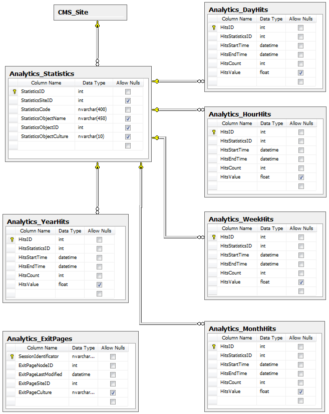

Web analytics API
Database tables
Web analytics use six primary database tables to store statistics and their values.
The Analytics_Statistics table stores records that represent the statistics of a tracked event within a certain context, i.e. related to a specific object, site and culture.
Five other tables are used to store the exact number of hits for the statistics in the Analytics_Statistics table:
Analytics_HourHits
Analytics_DayHits
Analytics_WeekHits
Analytics_MonthHits
Analytics_YearHits
When a hit for a tracked statistic occurs, it is logged into all of these tables. The difference between them is in the unit of time used to separate hits into individual records. For example, a record in the Analytics_HoursHits table contains the number of hits that were logged for a given statistic during one hour, while a single record in Analytics_MonthHits counts all hits that occurred over an entire month.
The Analytics_ExitPages table is used to temporarily store exit page candidates for the Top exit pages statistic. The latest candidate recorded for a visitor when their session expires is then stored as the final exit page.

Campaign statistic storage
The following tables store campaign tracking objects:
|
Database table |
Description |
|
Analytics_Campaign |
Contains records representing campaigns and their settings. |
|
Analytics_CampaignAsset |
Stores relationships between campaigns and their assets specified by their GUID. |
|
Analytics_CampaignAssetUrl |
Stores relationships between campaigns and their assets specified by their GUID for MVC sites. |
|
Analytics_CampaignConversion |
Contains records representing campaign conversions. |
Conversions used in campaigns are a different type of conversions that are used elsewhere, typically A/B tests. If you are interested in the other type of conversions, see Logging custom conversions on your website.
Custom conversion statistic storage
Custom conversion tracking objects are stored in the Analytics_Statistics table and the corresponding amount of hits for individual units of time are saved in the appropriate Hits table.
The following code names are used for custom conversion statistics:
conversion – general statistic used to store the overall custom conversion records. This statistic is always logged when a custom conversion is performed on the website.
abconversion;<A/B test code name>;<Variant code name> – logged when a conversion is performed by a user who viewed the given page variant of an A/B test.
mvtconversion;<MVT test code name>;<Combination name> – logged when a conversion is performed by a user who viewed the given content combination on a page with a defined multivariate test.
All types of custom conversions use the StatisticsObjectName column to store the code name of the logged custom conversion.
API classes
You can find all web analytics classes under the CMS.WebAnalytics namespace.
|
Class |
Description |
|
Analytics_Statistics table API |
|
|
StatisticsInfo |
Represents the statistics of a certain event within a specific context. |
|
StatisticsInfoProvider |
Provides management functionality for statistic records. |
|
Analytics_<time interval>Hits table API |
|
|
HitsInfo |
Represents the hits of statistics during a specific time interval. |
|
HitsInfoProvider |
Provides management functionality for statistic hits. |
|
Analytics_Campaign table API |
|
|
CampaignInfo |
Represents campaign tracking objects. |
|
CampaignInfoProvider |
Provides management functionality for campaigns. |
|
Analytics_CampaignAsset table API |
|
|
CampaignAssetInfo |
Represents the relationships between campaigns and their assets. |
|
CampaignAssetInfoProvider |
Provides management functionality for the relationships. |
|
Analytics_CampaignAssetUrl table API |
|
|
CampaignAssetUrlInfo |
Represents the relationships between campaigns and their assets on MVC sites. |
|
CampaignAssetUrlInfoProvider |
Provides management functionality for the relationships. |
|
CampaignAssetUrlInfoHelper |
Provides functionality for input validation. |
|
Analytics_CampaignConversion table API |
|
|
CampaignConversionInfo |
Represents conversion tracking objects of campaigns. |
|
CampaignConversionInfoProvider |
Provides management functionality for campaign conversions. |
|
Analytics_Conversion table API |
|
|
ConversionInfo |
Represents custom conversion tracking objects of all other objects using custom conversions (e.g. A/B tests). |
|
ConversionInfoProvider |
Provides management functionality for custom conversions. |
|
Other classes |
|
|
AnalyticsHelper |
Provides general web analytics functionality and data. |
|
HitLogProvider |
Contains methods used to create the analytics log files for statistics. |
|
HitLogProcessor |
This class defines the scheduled task that periodically processes analytics log files and transfers the information to the database. |